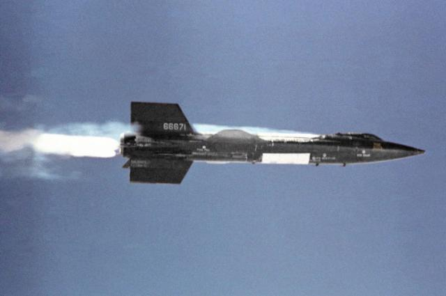

NASA is 50
It's fast approaching 50 years since US President Dwight D. Eisenhower and the US Congress created the National Aeronautics and Space Administration (NASA to its friends). October 1, 1958 marks the moment when the US started taking space seriously and the rest, as they say, is history - a glorious history.
 Buzz Aldrin and Apollo 11 Lunar Module: NASA's finest hourImage courtesy of NASA
Buzz Aldrin and Apollo 11 Lunar Module: NASA's finest hourImage courtesy of NASA
Space Race v1.0
It was clear that the motivation for forming NASA was to counter the perceived dominance in space of the USSR after they launched the world's first artificial satellite, Spuknik, on October 4, 1957 and the space race began. This served as a wakeup call to the US, after the much publicized and unsuccessful attempts to launch a satellite under Project Vanguard. In response, the US subsequently formed NASA and drafted in the expertise of the world's premier rocket designer, Werner Von Braun, to successfully launch their first satellite, Explorer 1, on January 31, 1958.
Space Race v1.1 - v1.2
The US was again beaten in the next space race: to put a human into orbit. The USSR successfully launched Yuri Gagarin into orbit on April 12, 1961. It took the US nearly a year to successfully launched their first human (John Glenn) into orbit on February 20, 1962. Not a great start for the US space effort and, by implication, NASA. But this was just the prelude to the real race - more a marathon than a sprint - to the moon. President John F. Kennedy on May 25, 1961 framed the new race so:
"I believe that this nation should commit itself to achieving the goal, before this decade is out, of landing a man on the Moon and returning him safely to Earth."
And so it was on July 20, 1969, what many consider to be NASA's finest hour, that Neil Armstrong and Edwin E. "Buzz" Aldrin, Jr. walked on the Moon and returned safely to Earth aboard Apollo 11. The success of the Apollo program is cited as the inspiration for people like Jeff Bezos and Elon Musk to launch private space ventures after making their fortunes in the internet boom.
 Space Shuttle LaunchImage courtesy of NASA
Space Shuttle LaunchImage courtesy of NASA
Following the Apollo Moon missions, NASA shifted its human space exploration priorities to building the International Space Station in low Earth orbit using the Space Shuttle. The Space Shuttle is a reusable spacecraft that glides back to Earth at hypersonic speeds after leaving Earth's orbit. It owes much to the research carried out by the X-15 (and other X-planes) as part of NASA's aeronautics mandate to explore the performance barriers of flight within the Earth's atmosphere. Also the Space Shuttle marked the early use of advanced computer-based simulations for fluid flow (Computational Fluid Dynamics) and structural loads (Finite Element Analysis) to augment traditional analysis methods such as wind tunnels.
North American X-15Image courtesy of NASA Dryden Flight Research Center Photo Collection
Space Race v2.0?
Recently NASA has committed to return to the Moon, possibly in response to a new space race with the emergence of China as a space power after its successful launch of Yang Liwei into orbit on October 15, 2003. Both nations have cited ambitions to launch human missions to Mars. We all know that competition is a great motivator if history is anything to go by. Who's your money on this time around?
NASA's Future
There can be no doubt that whatever the original intent of NASA it has served up a feast of innovations and technology advances that have stretched well beyond space and back into society at large. Thank NASA for pushing the bounds on miniaturizing computers so they no longer need whole rooms; for aerodynamic insights that allow fast, efficient flights over vast distances for the masses; and for pioneering the use of software simulation analysis tools - a special thank you from Symscape given the nature of our business.
The argument for funding blue-sky research, in physics for instance, is that the investment has no immediate payoff (US$10 billion for the Large Hadron Collider atom smasher anyone?) and is therefore difficult to justify. NASA has a similar problem, but it has a proven track record of spinoffs that benefit society at large. It seems a travesty that NASA's finest hour is still considered to be that 1969 moon landing - let's hope in the next 50 years NASA can shake loose and create many more fine hours.
Feedback
Questions? Ideas? Problems?

Recent blog posts
- CFD Simulates Distant Past
- Background on the Caedium v6.0 Release
- Long-Necked Dinosaurs Succumb To CFD
- CFD Provides Insight Into Mystery Fossils
- Wind Turbine Design According to Insects
- Runners Discover Drafting
- Wind Tunnel and CFD Reveal Best Cycling Tuck
- Active Aerodynamics on the Lamborghini Huracán Performante
- Fluidic Logic
- Stonehenge Vortex Revealed as April Fools' Day Distortion Field
 Get our Blog feed
Get our Blog feed